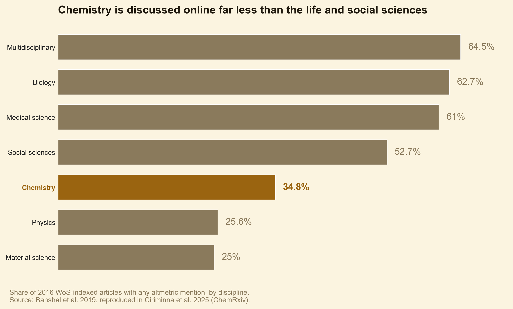

Altmetrics vs Citations: What Matters More?
The Metric Dilemma in Modern Academia
For generations, the undisputed currency of academic success was the traditional citation. Your impact was calculated by how many times your work appeared in the bibliographies of other peer-reviewed journals, culminating in a single, career-defining number: your h-index.
Traditional citations have one structural flaw. They are slow. A paper has to be read, built upon, written up, submitted, peer-reviewed, and published before it generates a single new citation, a cycle that often runs two to three years. In a fast-moving field, relying only on this lagging indicator means you cannot see your impact until long after it happens.
That gap is what alternative metrics, or altmetrics, were invented to fill. The idea is younger than most people assume. In 2010 four researchers published an “alt-metrics manifesto” online (Priem et al., 2010), arguing that “instead of waiting months for two opinions, an article’s impact might be assessed by thousands of conversations and bookmarks in a week.” The dash was dropped in 2011, the company Altmetric was founded the same year and shipped its Altmetric Explorer in 2012, and the major chemistry publishers adopted attention scores quickly: the Royal Society of Chemistry in 2013, the American Chemical Society in 2016. By mid-2024 the word “altmetrics” itself appeared in 3,692 research articles indexed by Scopus. The history and figures in this post draw on a 2025 review by Ciriminna, Della Pina, Luque, and Pagliaro, Altmetrics in Chemistry (ChemRxiv).
What Altmetrics Actually Count
To use these two layers well, you need to know what each one tracks and who is watching.
| Attribute | Traditional Citations | Altmetrics |
|---|---|---|
| Data tracked | Peer-reviewed journal articles, books, proceedings. | News, social posts, patents, policy documents, Wikipedia, blogs, Mendeley saves, downloads. |
| Velocity | Very slow. Months to years to accumulate. | Fast for some signals, slow for others (see below). |
| Audience | Academic peers within your discipline. | Policymakers, journalists, industry, the public, and peers. |
| Primary value | Long-term validation, tenure, academic authority. | Early signals of reach, evidence of societal impact for grants. |
How Much Attention Does Your Field Actually Get?
Here is the part most “build your altmetrics” advice skips: altmetric attention is extremely unevenly distributed, both across papers and across fields.
Across papers, the distribution is brutally skewed. Studying 12.3 million publications from 2012 to 2018, Fang and colleagues found that the vast majority received no or very few altmetric mentions, with the bulk of all attention flowing to Biomedical and Health Sciences, the Social Sciences, and the Life and Earth Sciences (reported in Ciriminna et al., 2025).
Across fields, the gap is just as stark. For 2016, Banshal and colleagues measured what share of each discipline’s articles got any altmetric mention at all:

Share of 2016 WoS-indexed articles with any altmetric mention, by discipline. Source: Banshal et al. 2019, reproduced in Ciriminna et al. 2025 (ChemRxiv).
Medical science, biology, and the social sciences had roughly six in ten articles discussed somewhere online. Chemistry sat at 34.8%, and physics and materials science at about a quarter. The pattern repeats with stronger scores: across articles indexed from 2000 to 2017, only 9.4% had an Altmetric Attention Score of one or higher, and chemistry rarely appeared in Altmetric’s annual top-100 ranking at all (Orduna-Malea & Delgado López-Cózar, 2019; Altmetric, 2021). When chemistry did break through, it was for work with obvious public resonance, like the 2020 detection of phosphine in the clouds of Venus.
The practical lesson: benchmark yourself against your own field, not against the biomedical papers that dominate the global leaderboard. A score that looks modest next to a viral medical preprint can be excellent for chemistry or materials science.
Velocity: Why Some Altmetrics Move First
Not all altmetric signals behave the same way. Mentions on Twitter, Facebook, Reddit, in the news, and on blogs accumulate fast, often within days of publication. Wikipedia citations, policy-document citations, and peer-review comments accumulate slowly, on a timeline that looks much more like citations themselves (Ciriminna et al., 2025).
So altmetrics are really two things at once. The fast signals are an early read on whether anyone noticed your work. The slow signals, policy and encyclopedia mentions, are themselves evidence of durable influence.
Why Altmetrics Matter for Grant Funding
Many researchers dismiss altmetrics as social-media noise. That is a costly mistake when you are writing a grant.
Funding agencies are under growing pressure to show the real-world utility of what they finance, and societal impact has become an explicit, separately-weighed objective alongside academic impact. Altmetrics give you something citations cannot yet provide: timely, concrete evidence of that societal reach. This is not just a marketing claim. Wooldridge and King (2019) found a correlation between expert peer-review judgments of a study’s societal impact and its altmetric data. A policy brief that cites your paper, or sustained coverage in a serious outlet, is proof you can write directly into your next proposal.
Altmetrics and Citations: A Signal, Not a Shortcut
It is tempting to claim that online attention simply converts into citations. The honest version is narrower. Altmetrics and citations are correlated, but they measure different things, and high attention does not guarantee citations. In chemistry, the single most-downloaded analytical-chemistry paper of 2013 went on to attract very few citations in the following years (Chi et al., 2019). Attention widened the audience; it did not by itself make the work foundational.
The defensible position is this: getting the right readers to encounter your work early cannot hurt your citation prospects, and for work with genuine societal relevance it clearly helps. Treat altmetrics as a leading indicator of reach, and citations as the slower verdict on scholarly use. Optimizing only for the first while ignoring the second, or the reverse, leaves impact on the table.
How to Optimize for Both Layers
- Publish open access when you can. Open papers bypass paywalls and consistently see both higher altmetric attention and stronger long-term citation velocity.
- Write machine-readable titles and abstracts. Precise, keyword-true titles help human search, indexing, and the AI systems that now synthesize answers from both citation depth and online footprint.
- Seed the discussion where your field actually is. Venues differ by discipline: in chemistry the dominant altmetric channels are Mendeley saves and Twitter, not the same mix that drives biomedical attention. Share the paper with the specific peers and communities whose problems it speaks to.
- Do not let the paper sit silently in a repository. Deposit is necessary, not sufficient. Sustained, targeted outreach is what turns a deposited PDF into a read, saved, and eventually cited one.
Conclusion
In the debate of altmetrics versus citations, the answer is not to pick one. The most effective researchers treat altmetrics as the leading engine of reach and citations as the destination, while reading both against the norms of their own field rather than the global leaderboard.
Ready to move both numbers? Loud Camel, a tool that helps researchers get cited and recognized, runs precision outreach to the exact scholars who matter most to your niche. Start your first briefing now →